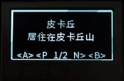
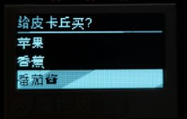
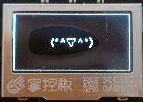
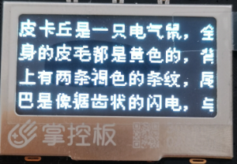
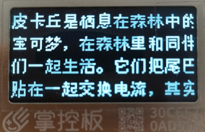

sysgui – 系统 GUI 模块¶
sysgui 模块源代码在文件夹 TaoLiSystem/core/sysgui.py 下，用于系统的GUI绘制。
这个模块不依附于系统存在，可以单独提取使用。唯一依赖的变量是 touchPad_sensitivity 可以手动设置为全局变量然后提取。
函数¶
- sysgui.draw_string_from_bin(x, y, fp, string[, r])¶
用于方便将 bin2picture.py 生成的字体图片文件直接绘制成文字。图标 bin 文件生成 -> 跳转 。
x– 绘制的 x 坐标y– 绘制的 y 坐标fp– 图标 bin 文件打开的IO对象string– 要绘制的文字r– 用于定位的图片点，是一个字典，如果不提供则遍历 bin 文件查找。
- sysgui.draw_string_center(text, y[, mode, ex])¶
用于将文字水平居中绘制在屏幕中。
text– 要绘制的文字y– 绘制的 y 坐标mode– 文字绘制的方式，默认为 TextMode.normal，此参数移步 oled.DispChar() 。ex– 从中间位置向上平移，默认为 False ，如果为 True，则文字会从屏幕中间向上平移 y 参数个像素。
- sysgui.draw_rect_empty(x1, y1, x2, y2[, function, no_fill])¶
绘制一个空框，描边是 1 像素的白色线条，填充是黑色。
x1– 起始（左上角）的 x 坐标y1– 起始（左上角）的 y 坐标x2– 结束（右下角）的 x 坐标y2– 结束（右下角）的 y 坐标function– 画填充之后，画边框之前执行的函数，默认无。no_fill– 不填充直接画边框。默认 False 。
- sysgui.get_character_width(s)¶
获取输入字符串的总宽度（掌控板自带字体的宽度），返回字符串总宽度。
s– 需要获取字符宽度的字符串
- sysgui.selectionBox(items[, selected_id])¶
启动一个选择器，让用户全屏选择。返回用户选择的项在
items下标。操作方法查看 全屏选择页面 介绍。items– 要给用户选择的物品列表selected_id– 默认选择项，默认为 0 ，就是第一项。
使用示例:
>>> from TaoLiSystem.core import sysgui >>> sysgui.selectionBox(["皮卡丘\n居住在皮卡丘山", "皮卡丘\n居住在森林"]) 0 # 按下 A 键后
{kind=link}
- sysgui.itemSelector(title, items[, selected_id])¶
启动一个选择器，让用户选择栏目。返回用户选择的项在
items下标。操作方法查看 物品选择页面 介绍。title– 选择器标题items– 要给用户选择的物品列表selected_id– 默认选择项，默认为 0 ，就是第一项。
使用示例:
>>> from TaoLiSystem.core import sysgui >>> sysgui.itemSelector("给皮卡丘买？", ["苹果", "香蕉", "番茄酱"]) 2 # 按下 A 键后
{kind=link}
- sysgui.messageBox(content[, yes_text, no_text, button_line, content_fun])¶
显示一个消息框，给用户选择。返回 True/False，用户按下 A 键时返回 True，按下 B 键返回 False。
content– 消息的内容yes_text– 可选参数，确认按钮的提示，默认为 “好的”no_text– 可选参数，取消按钮的提示，默认为空，不显示button_line– 可选参数，默认为 False，是否将确认与取消按钮分行显示content_fun– 可选参数，默认为 None，如果传入一个函数将会在绘制时采用此函数绘制，仅提供按钮事件的返回
使用示例:
>>> from TaoLiSystem.core import sysgui >>> sysgui.messageBox("皮卡丘是不是\n很可爱呢？", yes_text="是的", no_text="对啊") True # 按下 A 键后
{kind=link}
- sysgui.tipBox(content[, t])¶
显示一个提示框，提示用户。
content– 提示的内容t– 显示的时间，单位秒，默认3秒
使用示例:
>>> from TaoLiSystem.core import sysgui >>> sysgui.tipBox("(*^▽^*)", 2)
{kind=link}
- sysgui.txtReader_DispChar(s[, x, y, mode, auto_return, screen_width, screen_height, dispchar])¶
用于换行显示文字在屏幕上，是一个过程函数，被 txtStreamReader 调用。在文字占满屏幕时会直接跳出循环。在未填满屏幕时不返回，跳出循环后返回多出的一个字符。
s– 显示的文字x– 显示的横坐标位置，默认为 0 。y– 显示的纵坐标位置，默认为 0 。mode– 文字绘制的方式，默认为 TextMode.normal 。auto_return– 是否自动换行，默认为True。screen_width– 屏幕宽度，默认为掌控板 oled 宽度。screen_height– 屏幕高度，默认为掌控板 oled 高度。dispchar– 是否显示文字，默认为 True ，将会绘制文字。如果为 False ，只会遍历文字。
- sysgui.txtStreamReader(stringIO, title[, bookmarks, screen_width, screen_height, disp_function])¶
实现文本流阅读。操作方法查看 文本读取页面 介绍。
stringIO– 文本IO或者文件IO对象title– 阅读标题bookmarks– 书签类别，默认是全局书签。书签列表每个项是一个小列表，形如 [“书签1”, 0]，第一项为书签名称，第二项为书签位置。screen_width– 屏幕宽度，默认为 oled 屏幕宽度 + 8，一行大概可以塞满中文字。screen_height– 屏幕高度，默认为 oled 屏幕高度。disp_function– 显示函数，默认为 txtReader_DispChar 。
使用示例1:
>>> from TaoLiSystem.core import sysgui >>> f = open("pikachu.txt", "r") >>> sysgui.txtStreamReader(f, "皮卡丘介绍", []) >>> f.close()
使用示例2:
>>> from TaoLiSystem.core import sysgui >>> import uio >>> sio = uio.StringIO("皮卡丘是栖息在森林中的宝可梦，在森林里和同伴们一起生活。它们把尾巴贴在一起交换电流，其实是在互相打招呼。有时会对虚弱的同伴施以电流和电击，把自己的精力分给同伴。它性情聪慧，会用电去电击它第一次看到的东西，将生硬的果实用电击烤软后再吃。") >>> sysgui.txtStreamReader(sio, "皮卡丘介绍", []) >>> sio.close()
{kind=link}
{kind=link}
- sysgui.textTypeBox([text, all_text, input_callback])¶
打开一个输入页面，提示用户输入。返回用户输入的字符串。操作方法查看 文字输入页面 介绍。
text– 默认的输入文本，默认为空all_text– 所有字组列表，默认为["0123456789", "abcdef", "ghijkl", "mnopqr", "stuvwx", "yz", ".?!=;:*"]input_callback– 输入文字回调函数，默认采用默认函数。此函数应该有三个参数：origin_text– 已经输入的文本input_text– 用户新选择的文本text_pos– 目前光标位置返回值要求：返回一个元组，第一个项为输入后的文本，第二项为光标位置
使用示例:
>>> from TaoLiSystem.core import sysgui >>> sysgui.textTypeBox() 'Pikachu!' # 输入后返回